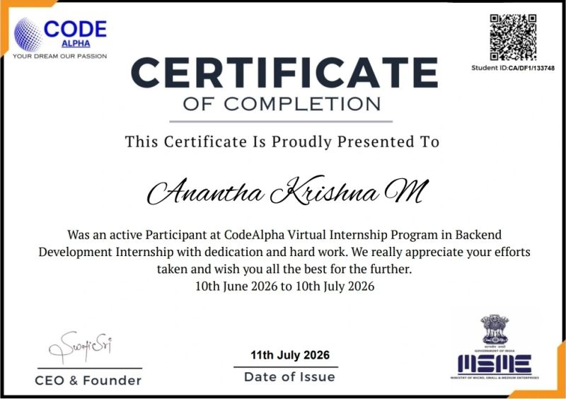
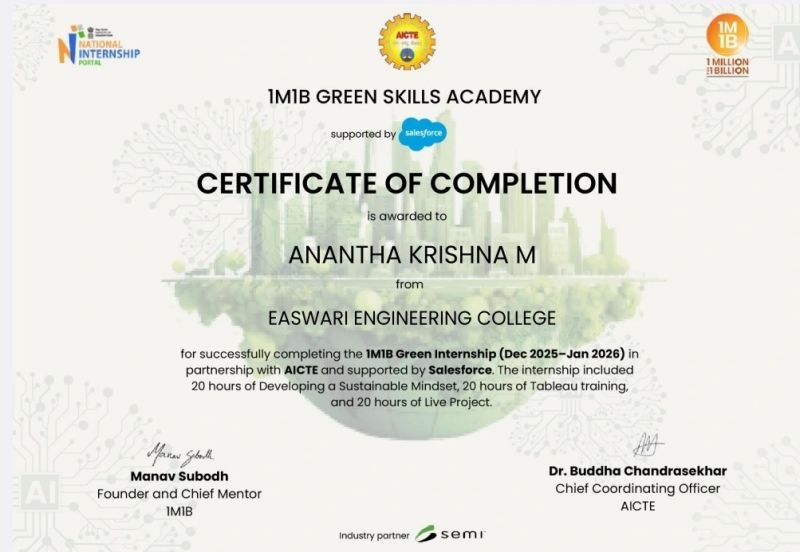
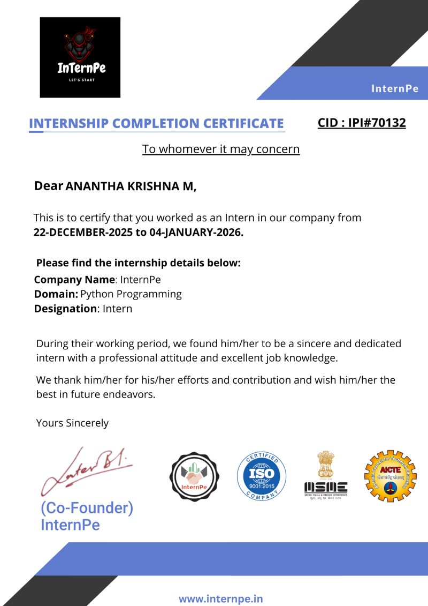
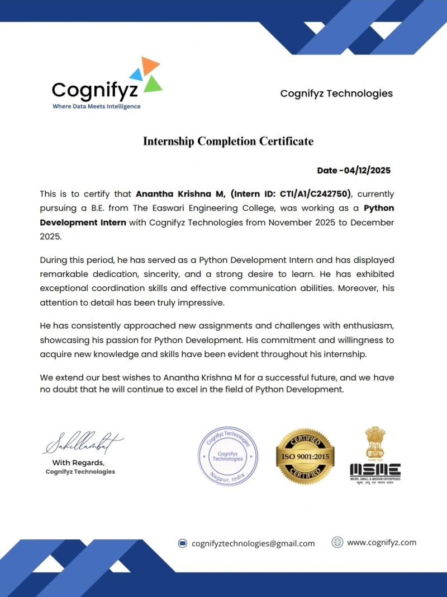
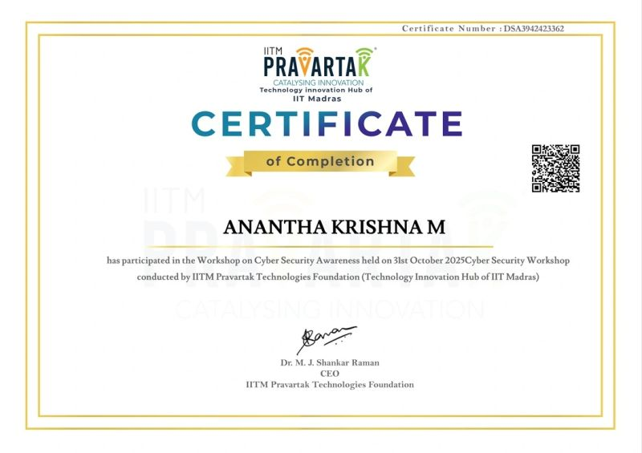
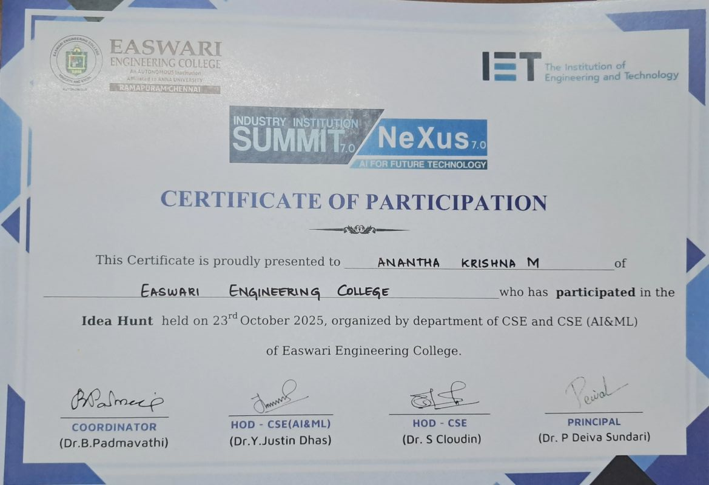
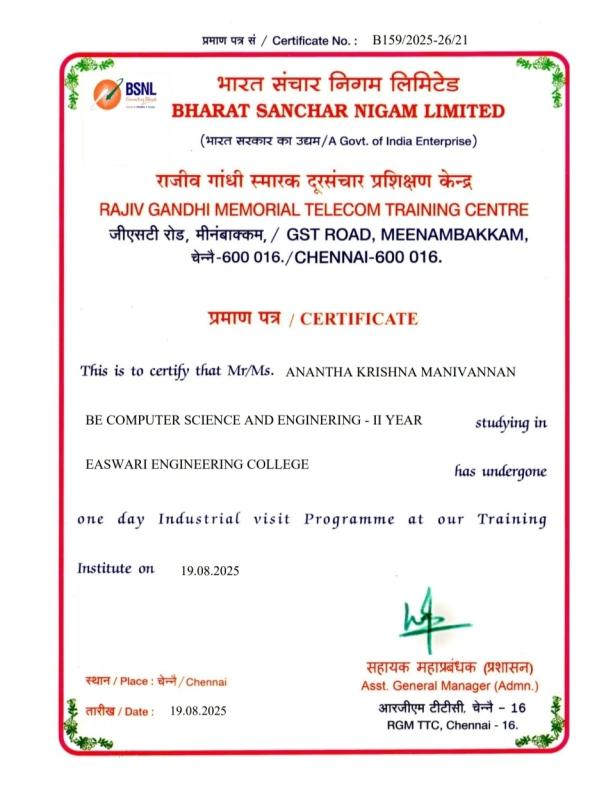

Learning by building and participating.
A chronological record of software development internships, hands-on workshops, technical presentations, and industrial visits. Select an available certificate image to enlarge.

CodeAlpha · Backend Development Internship Certificate
Internship · Backend Engineering
CodeAlpha · Backend Development Intern
Engineered core backend applications in Python using Flask and SQLite. Built a reliable URL shortener service with analytics and an event registration portal supporting participant lookups, registration workflows, and server-side validation.

1M1B Green Skills Academy · Internship Completion Certificate
Internship · Applied AI & Sustainability
1M1B Green Internship · AI Water Demand Forecasting
Developed predictive machine learning models to analyze campus and hostel water consumption patterns. Implemented time-series forecasting using Python, Pandas, scikit-learn, and XGBoost, coupled with an interactive Streamlit and Tableau monitoring dashboard offering automated pump-scheduling recommendations.

InternPe · Python Programming Internship Certificate
Internship · Python Development
InternPe · Python Programming Intern
Completed intensive software programming assignments in Python, engineering algorithmic problem solvers, game state management systems with defensive edge-case handling, and structured command-line utilities.

Cognifyz Technologies · Python Development Internship Certificate
Internship · Software Engineering
Cognifyz Technologies · Python Development Intern
Successfully completed two progressive levels of software development tasks covering string manipulation, automated data parsing, mathematical evaluation modules, and regex-based validation engines.

IITM Pravartak · Cyber Security Awareness Workshop Certificate
Technical Workshop
Cyber Security Awareness Workshop · IITM Pravartak
Participated in an intensive technical seminar on cybersecurity defense mechanisms, reconnaissance strategies, vulnerability analysis, and modern attack vectors including AI-assisted social engineering.

Idea Hunt · NeXus 7.0 Participation Certificate
Technical Symposium Presentation
Idea Hunt · NeXus 7.0, Easwari Engineering College
Conceptualized and presented a healthcare accessibility architecture designed to connect patients with emergency ambulance networks, nearest trauma centers, and cloud-backed medical identification profiles.

BSNL RGMTTC · Certificate
Industrial Exposure
BSNL · One-Day Industrial Visit
Attended an industrial technical study tour at the Rajiv Gandhi Memorial Telecom Training Centre in Chennai, gaining practical insights into broadband routing hierarchies, optical fiber networks, and telecommunications switching infrastructure.